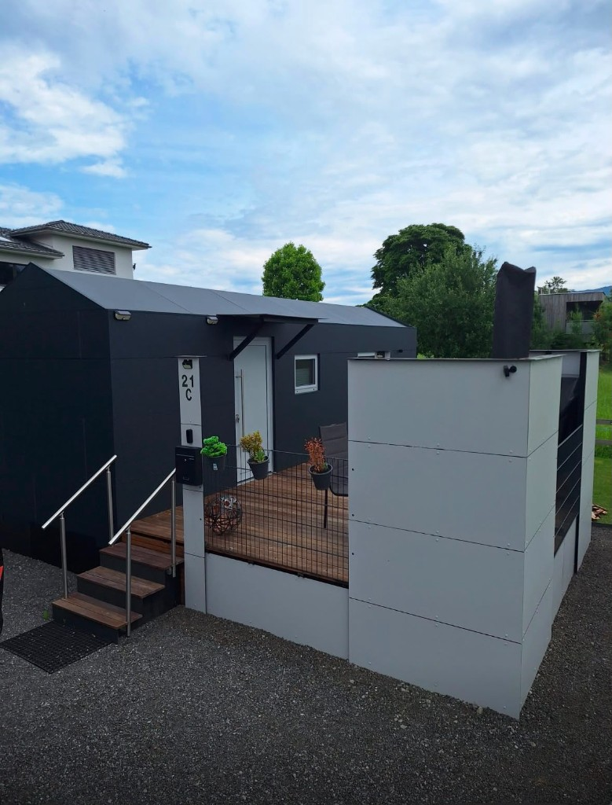
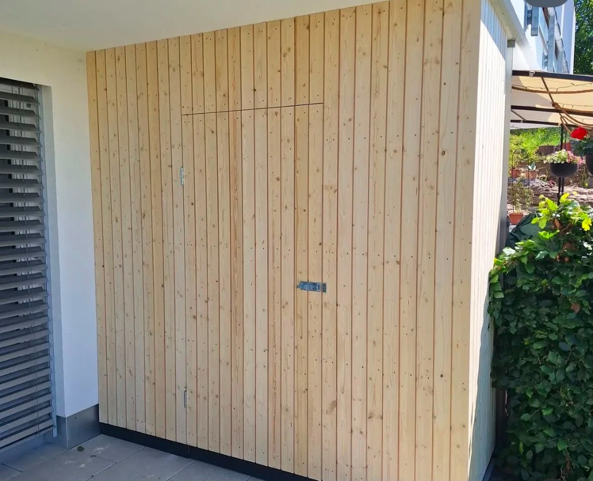
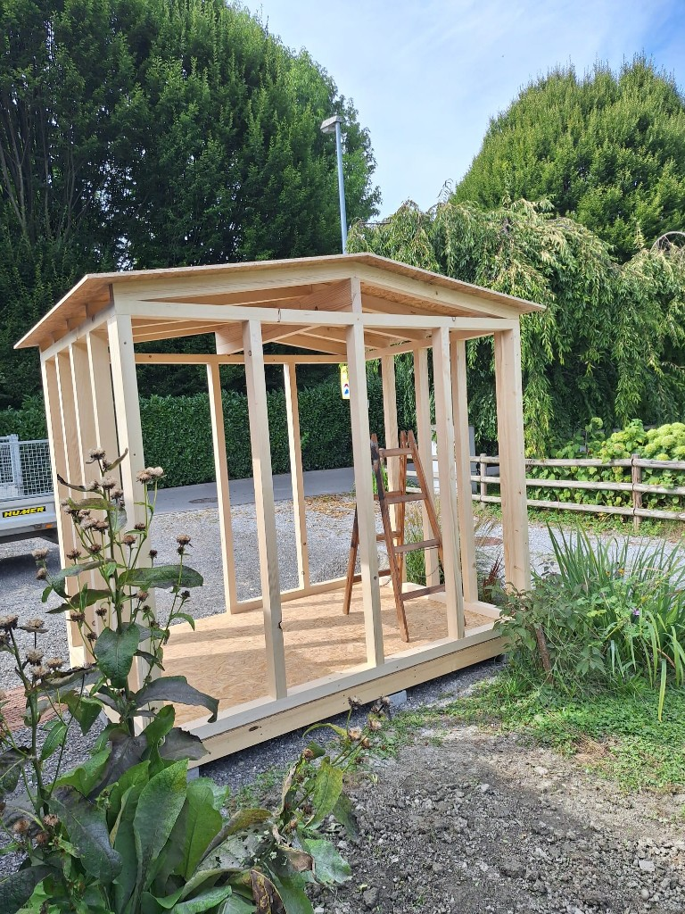
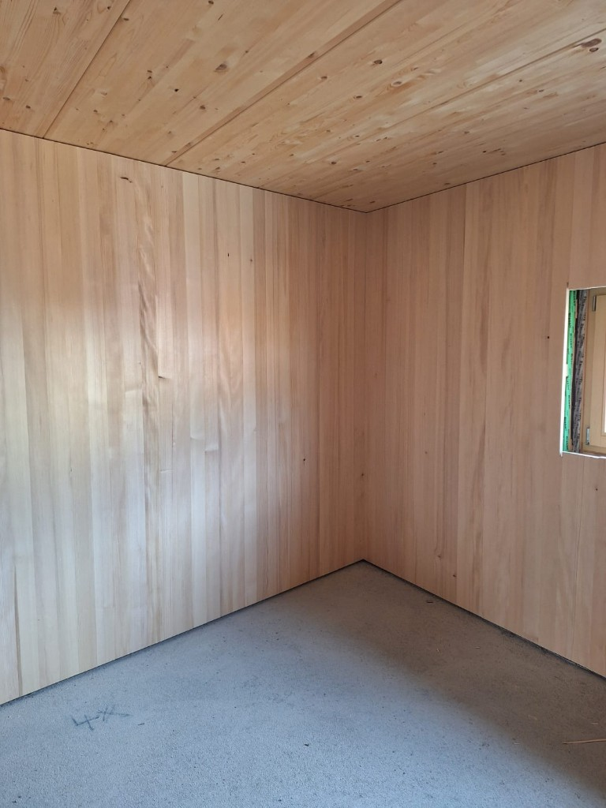
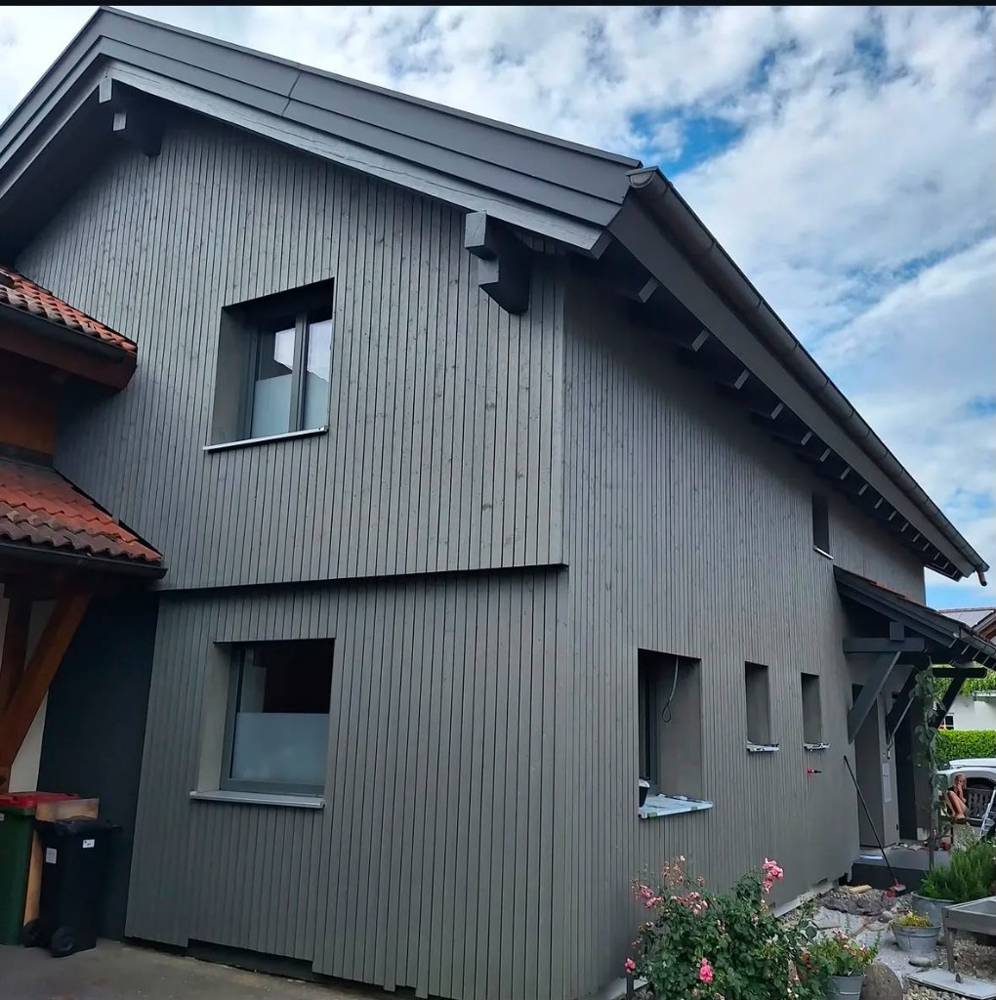
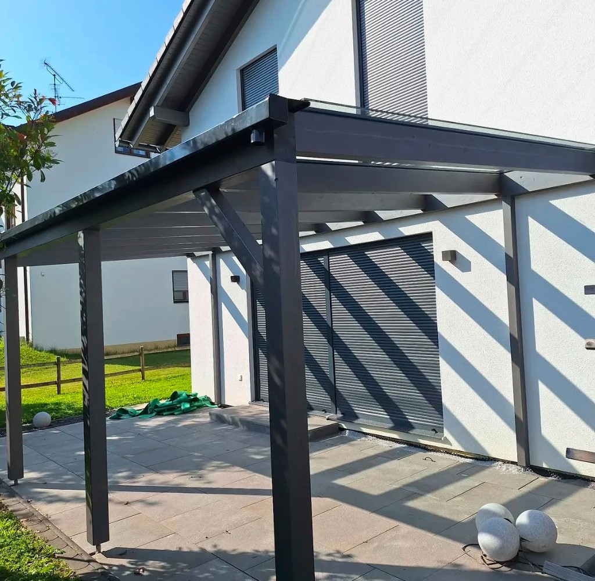
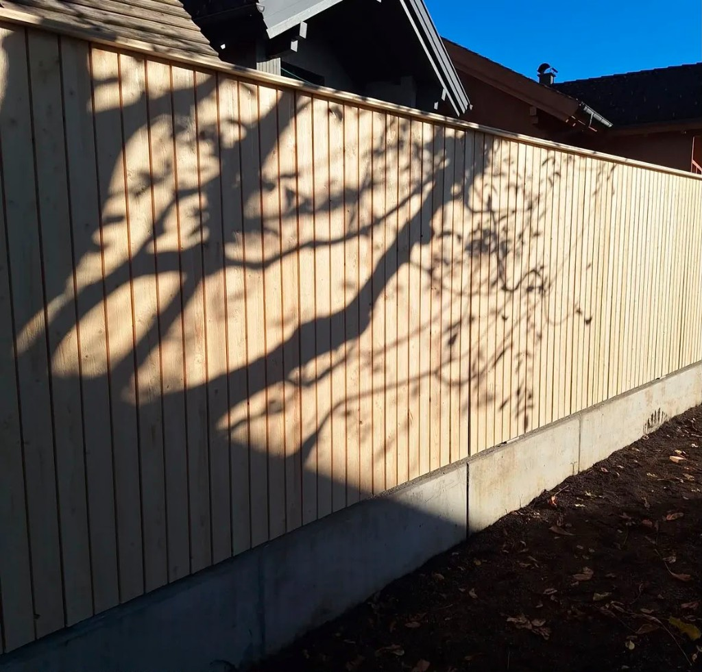
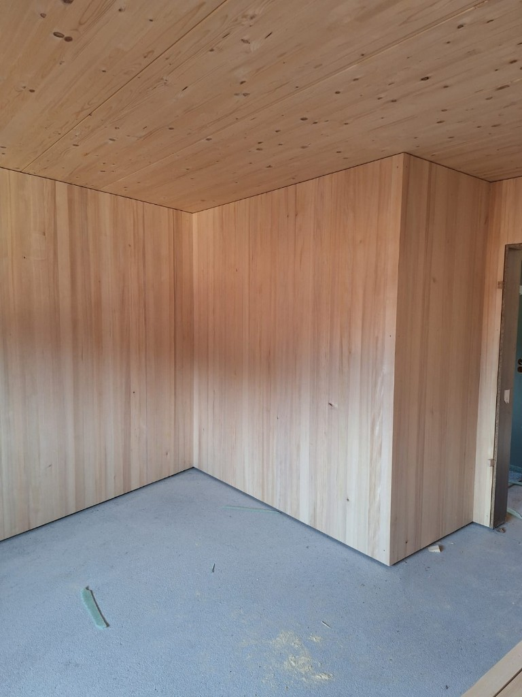
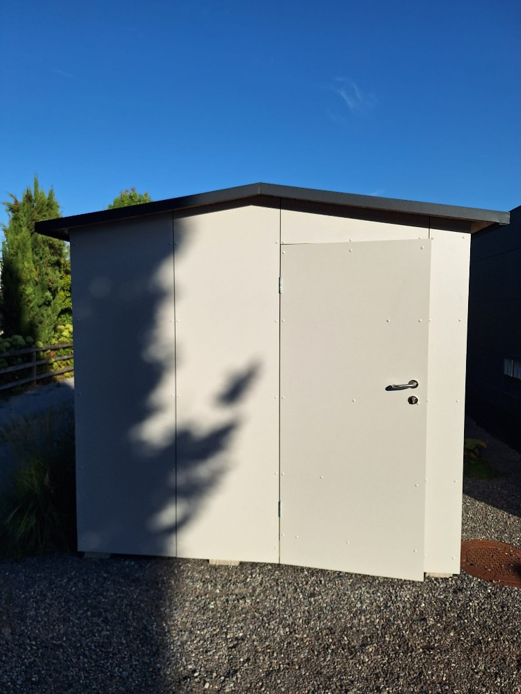

Tiny Houses
Kompakte Wohnträume aus Holz – effizient geplant, hochwertig ausgeführt und bereit für ein Leben mit weniger Fußabdruck.
Mehr erfahren
Moderne Zimmerei für Tiny Houses, Fassaden, Balkone und individuelle Holzbau-Projekte – präzise gefertigt, langlebig gedacht.
Leistungen
Von der kompakten Tiny-House-Lösung bis zur maßgeschneiderten Fassade – wir gestalten Holzprojekte mit klarer Formsprache und handwerklicher Tiefe.
Kompakte Wohnträume aus Holz – effizient geplant, hochwertig ausgeführt und bereit für ein Leben mit weniger Fußabdruck.
Mehr erfahrenCharakterstarke Holzfassaden, die Architektur und Natur verbinden – wetterfest, präzise und mit zeitloser Ästhetik.
Mehr erfahrenOffene Lebensräume im Freien – Balkone und Überdachungen, die Schutz bieten und zugleich einladend wirken.
Mehr erfahrenIndividuelle Carports und Sonderanfertigungen – funktional durchdacht, sauber konstruiert und auf Ihr Grundstück abgestimmt.
Mehr erfahren
Über uns
Bei HolzVision Schwärzler GmbH steht Maßarbeit vor Standards. Wir entwickeln individuelle Lösungen, die zu Ihrem Grundstück, Ihrem Leben und Ihrem Geschmack passen – modern gedacht, edel ausgeführt und nahbar begleitet.
Alles aus einer Hand: Geschäftsführer Ewald Schwärzler betreut und setzt jedes Projekt persönlich um – von der ersten Idee über die Planung bis zur fertigen Konstruktion.
Projekte
Echte HolzVision-Projekte: Stauraum, Fassaden, Sichtschutz, Überdachungen und Innenausbau – präzise gefertigt und vor Ort umgesetzt.
Vorher & Nachher
Aus einem provisorischen Abstellbereich wird eine elegante Stauraumlösung mit vertikaler Holzlamellenfront – bündig integriert, wetterfest und mit unsichtbarer Türführung.

NachherVorher & Nachher
Vom Holzgerüst zum fertigen Raum: Wände und Decke in Weißtanne – warm, natürlich und millimetergenau auf den Baukörper abgestimmt.

Vorher
Nachher




Kontakt
Für Anfragen und Projektbesprechungen melden Sie sich direkt bei Ewald Schwärzler.